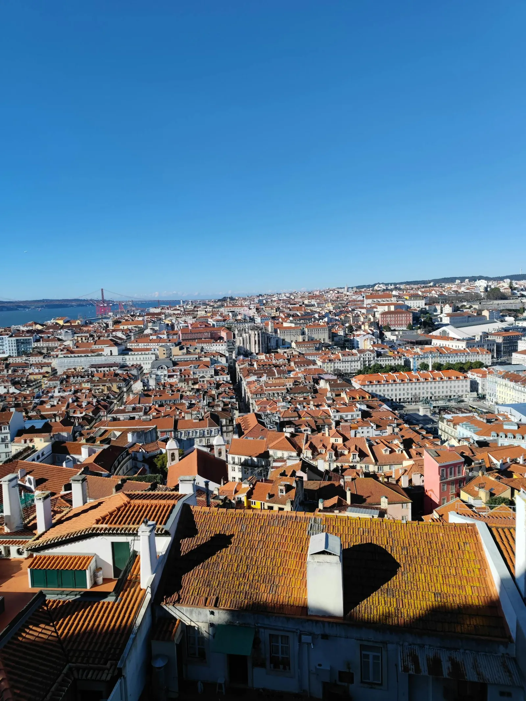
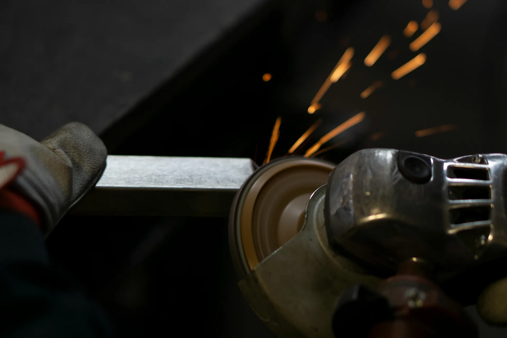
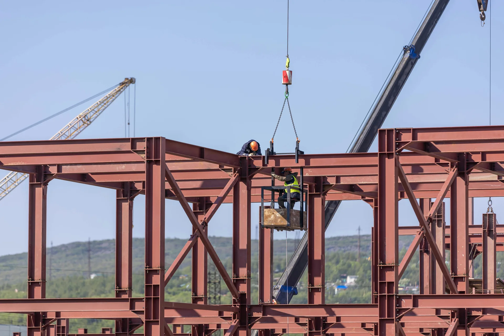
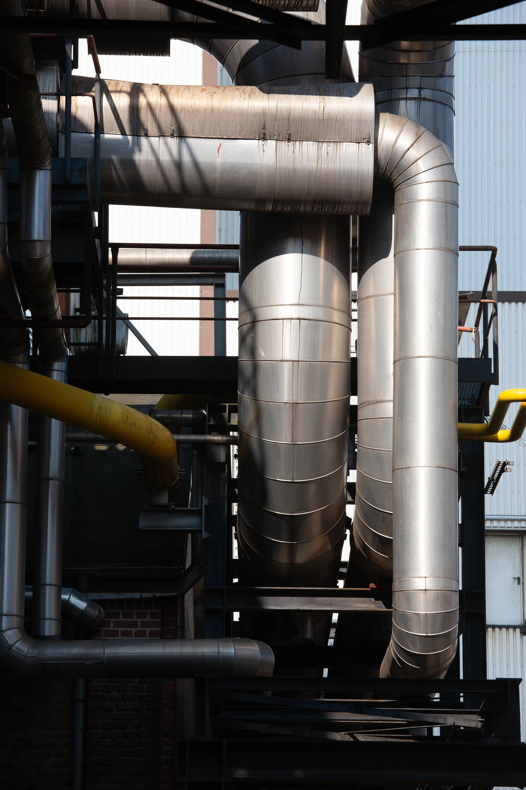
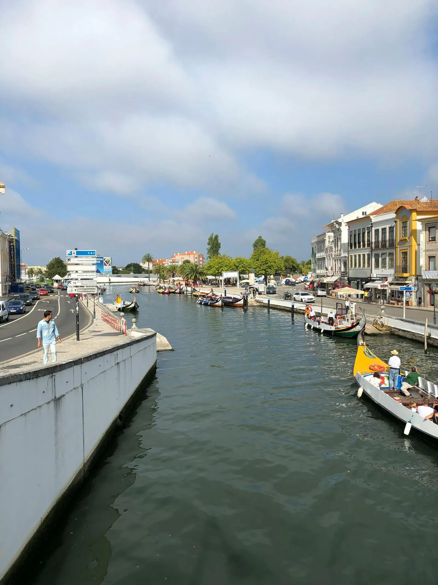
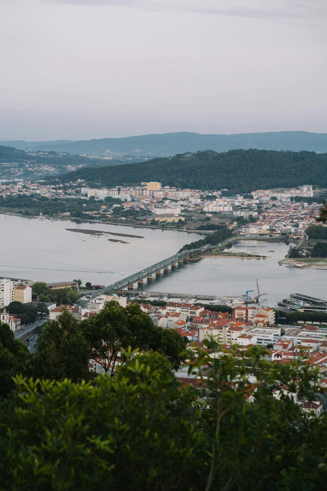

Prestação de serviços técnicos industriais
Execução técnica industrial. Uma equipa, uma responsabilidade.
A M&A Elo executa projectos técnicos industriais em todo o território português e na Europa. Soldadura, serralharia, caldeiraria, tubagem, pintura industrial e manutenção — com equipa própria, gestão operacional e responsabilidade pelo resultado.
O que executamos
Seis especialidades técnicas executadas com equipa própria.
Para uma visão geral. Para o detalhe técnico de cada especialidade — processos, materiais e contextos — consulte a página de serviços.
-
Soldadura industrial
MIG/MAG · TIG · Eletrodo
Aço carbono, inox e ligas especiais. Soldadura certificada em obra ou oficina, com supervisão técnica directa.
-

Serralharia e estruturas metálicas
Industrial e civil
Fabrico, montagem e instalação de estruturas metálicas em obra ou unidade fabril.
-

Caldeiraria industrial
Reservatórios · Permutadores · Sob pressão
Fabrico e montagem de reservatórios, permutadores e equipamentos sob pressão.
-

Tubagem industrial
Aço, inox, ligas especiais
Traçado, corte, conformação e montagem de circuitos de tubagem industrial.
-
Pintura industrial
Anticorrosivo · Acabamento
Preparação de superfície e aplicação de sistemas de pintura em estruturas metálicas e equipamentos.
-
Montagem e manutenção
Equipamentos · Paragens programadas
Montagem de equipamentos industriais, paragens programadas e intervenções de manutenção.
Não encontra o que procura? Fale connosco — analisamos a viabilidade.
Como trabalhamos
A M&A Elo não cede mão-de-obra.
Uma empresa, uma responsabilidade.
-
01
Assumimos o projecto.
Cliente contrata o resultado, não a mão-de-obra. Cada projecto é avaliado tecnicamente antes de proposta.
-
02
Constituímos a equipa.
Equipa dimensionada para o âmbito, prazo e exigências técnicas. Selecção, mobilização e supervisão sob nossa coordenação.
-
03
Respondemos pelo resultado.
Responsável técnico identificado, gestão operacional própria e entrega documentada em cada fase.
M&A Elo Profissional, Unipessoal, Lda.
Organização, acompanhamento e rigor ao serviço das empresas.
A M&A Elo Profissional executa serviços técnicos para empresas industriais em Portugal — soldadura MIG/MAG e TIG, serralharia, tubagem, montagem e manutenção metalomecânica. Equipa própria, analisada para cada projeto, com acompanhamento direto do orçamento à entrega.
Cada projeto é avaliado com critério técnico: tipo de intervenção, materiais, prazo, contexto da obra e requisitos específicos. Sem improviso, com responsabilidade em cada fase.
Projectos executados
Intervenções reais, com âmbito, equipa e prazo identificados.
Três casos em destaque. A descrição técnica completa de cada projecto está disponível na página da empresa.
-
Fabricação de tubagens em aço carbono
Fabrico de rede de tubagens em aço carbono. Processos TIG e Eletrodo. Equipa de 4 soldadores e 2 serralheiros, 4 semanas.
Indústria de fabrico de matéria-prima para poliuretano.
-
Fabricação de pás de escavadeiras
Fabrico em série em processo MAG. Equipa de 6 soldadores e 3 ajudantes, 9 semanas.
Sector de equipamentos de construção e movimentação de terras.
-
Pintura industrial de armazém
Pintura industrial em 3.000 m² de estruturas metálicas e paredes. 4 pintores e 3 ajudantes, 8 semanas.
Sector da construção civil.
Processo de execução
Da análise à entrega: quatro etapas, uma equipa, um responsável técnico.
-
01
Análise do âmbito
Tipo de intervenção · Materiais · Prazo · Contexto
Leitura técnica do projeto antes de qualquer proposta. A equipa avalia o âmbito, materiais e contexto operacional para responder com critério.
-
02
Proposta técnica
Plano de execução · Equipa · Orçamento
Apresentação formal do plano: equipa proposta, materiais, prazo de execução e orçamento detalhado. Sem orçamentos cegos.
-
03
Execução em obra
Equipa qualificada · Supervisão técnica
Equipa M&A Elo no terreno, com responsável técnico identificado e comunicação contínua com a empresa cliente em cada fase.
-
04
Entrega documentada
Verificação · Documentação · Suporte
Verificação técnica, documentação da intervenção e suporte pós-entrega quando aplicável. Encerramento responsável do projeto.
Mobilidade
Actuamos em todo o território português e na Europa.
Mobilidade rápida e experiência em múltiplos sectores e regiões. Sede em Miranda do Douro, na fronteira com Espanha — posição estratégica para mobilidade ibérica.


Projectos internacionais: Espanha · França · Bélgica · Alemanha. Ver regiões de actuação →
Equipa técnica
Profissionais qualificados a integrar as equipas M&A Elo.
A M&A Elo executa com equipa própria. O canal de candidaturas é a porta de entrada para profissionais que queiram integrar projetos compatíveis com a sua especialidade e disponibilidade.
Soldador · Serralheiro · Pintor Industrial · Outras funções técnicas ligadas a obra, indústria e metalomecânica
Para profissionais
-
01
Escolha a especialidade
Soldador, serralheiro, pintor industrial ou candidatura geral para outras funções técnicas.
-
02
Formulário rápido
Dados de contacto, experiência e disponibilidade geográfica — sem complicação.
-
03
Análise pela equipa
O perfil é avaliado pela equipa técnica e arquivado para projetos compatíveis.
-
04
Contacto direto
A equipa entra em contacto quando surge projeto alinhado com a especialidade e região.
Para empresas — contacto directo com a M&A Elo
Precisa de execução técnica industrial com uma empresa que assume a responsabilidade completa?
Descreva o projecto. Respondemos em 24 horas úteis com proposta técnica, equipa e prazo.